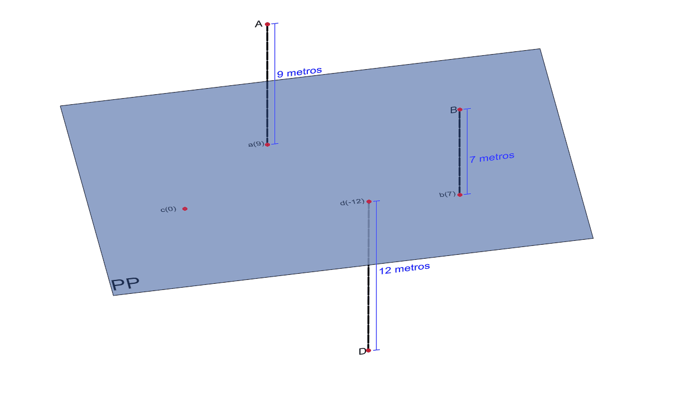
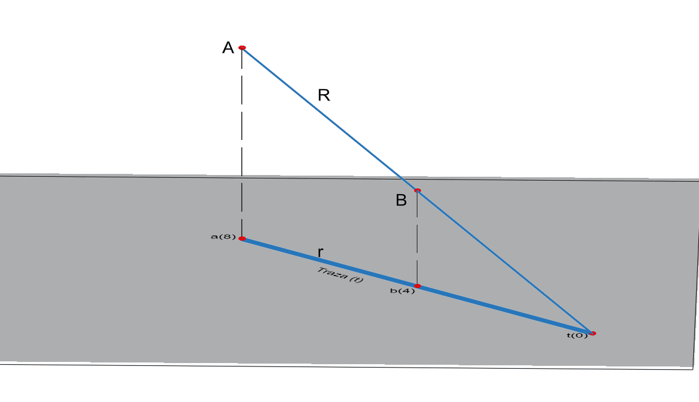
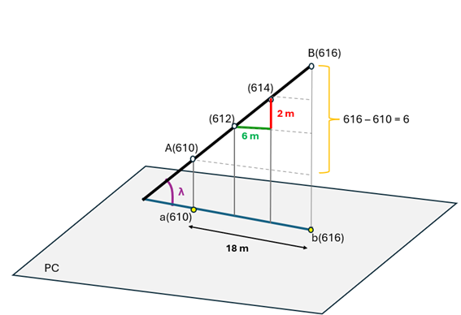
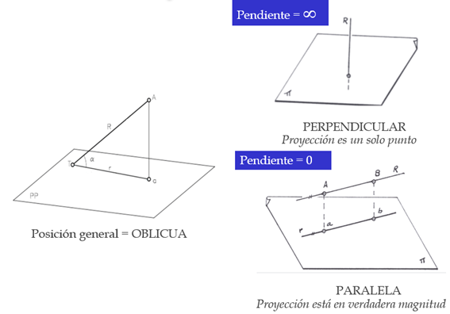
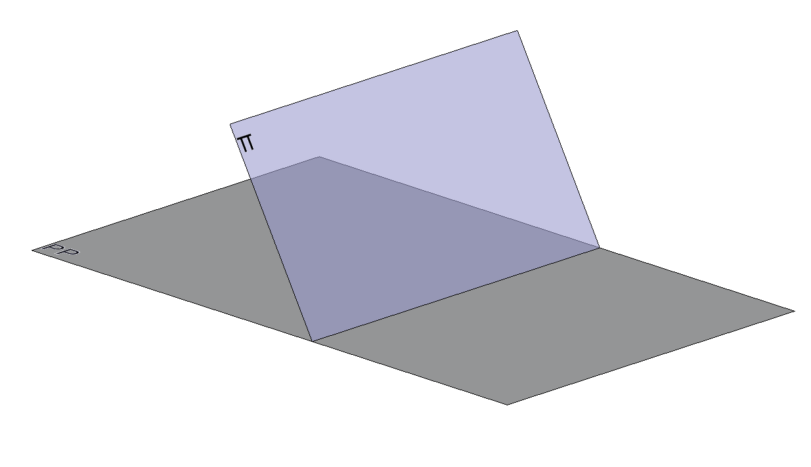

Fundamentos
Fundamentos del sistema de planos Acotados
Contenido
- Representación del punto
- Representación de la recta
- Posiciones particulares de la recta
- Representación del plano
Apuntes
Representación del punto
Viene caracterizado por su proyección sobre el plano horizontal y por su cota con relación a dicho plano. En la siguiente figura, se representan algunos puntos en este sistema. Los puntos de cota cero estarían situados en el plano de proyección.
Representación de la recta
Si unimos las proyecciones horizontales de dos puntos tendremos definida la recta. En la siguiente figura se observa la recta R definida por los puntos A y B.

Se denomina traza de la recta (t) al punto de cota cero de la misma, esto es, la intersección de la recta con el plano de referencia.
La Equidistancia (e) es la distancia vertical que separa dos puntos de cota consecutiva.
El Intervalo de la recta R (i) es la distancia horizontal que hay que recorrer para subir o bajar un valor de la equidistancia.
La Pendiente de la recta es la relación entre las distancias vertical y horizontal de dos de sus puntos o lo que es lo mismo, la relación entre la equidistancia y el intervalo. Por lo tanto, es la tangente trigonométrica del ángulo (α) que la recta forma con el plano horizontal o de comparación. Se puede expresar en grados (º), en tanto por ciento y en tanto por uno: \[ \text{Pendiente} = \frac{dV}{dH} = \frac{e}{i} = \tan \alpha \]
Nota
Por tanto, una recta está determinada si conoce la dirección de su proyección horizontal, un punto de la misma, el sentido en que la recta asciende y su pendiente.
En el siguiente ejemplo, la equidistancia es igual a 2, el intervalo (i) es igual a 6 y la pendiente se calcula como: \[ \text{Pendiente} = \frac{2}{6} = 0.333 \]
\[ \text{Expresada en tanto por ciento} = 33.3\% \]

También podría calcularse como 6/18 o cualquier otra combinación conocida de dos puntos de la recta, puesto que al tener pendiente uniforme la relación es la misma entre cualquiera de sus puntos.
Posiciones particulares de la recta
Respecto al plano horizontal de comparación, las rectas pueden ser de tres tipos:
- Oblicua: la recta r cortará el plano en el punto de su traza.
- Horizontal o paralela: todos sus puntos tienen la misma cota, es paralela al plano de comparación. Su pendiente es cero.
- Vertical o perpendicular: La proyección de la recta es un punto. Su pendiente es infinita.

Representación del plano
Rectas singulares del plano:
Horizontales del plano: Se denominan así las rectas del plano cuyos puntos tienen la misma cota. Para determinarlas bastará unir los puntos del plano que tengan la misma cota. Como todas las horizontales del plano son paralelas entre sí sus proyecciones también lo serán.
Traza del plano: Se denomina así a la horizontal de cota cero del plano o, lo que es lo mismo, la intersección de ese plano con el de proyección.
Recta de máxima pendiente (LMP): Se denomina así a la recta del plano que forma el mayor ángulo con el plano de proyección. Como las rectas horizontales del plano son paralelas al plano de proyección la recta de máxima pendiente será perpendicular a dichas horizontales.

Nota
En el Sistema Acotado los planos se representan, en general, por la proyección graduada de su recta de máxima pendiente. La pendiente de un plano se mide por la de su línea de máxima pendiente.
Material complementario
Vídeos y web sobre el sistema de planos Acotados del profesor Agustín Balcázar Fernández de la Escuela Técnica Superior de Edificación de la UPM.
Web de dibujo técnicoPágina web sobre dibujo técnico en sentido amplio. Tiene explicaciones cortas y sencillas, la ventaja es que el contenido está bien estructurado.